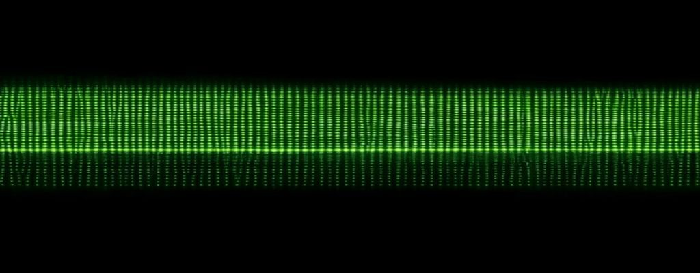

boot · evidence-based design system
Design that earns its ink._
Color, charts, type, and layout that read as one machine — proven over fashionable, every choice inside the accessibility floor.
Every color pairing computed for AA — never eyeballed.
Terminal._
Terminal is the machine in the set — a warm phosphor deck that treats the page like the front panel of a computer you operate, not a brochure you scroll. Every region is an engraved bay with a silkscreen legend and a channel code; every live signal lights a lamp; the controls are chunky keycaps you can feel, read down to the byte.
It carries a retro-computing, gaming, sci-fi lineage into a fresh hand — the amber-and-green glow and mono voice are real, but the structure is crisp and modern, not a dated CRT costume. The character is confidence and play: amber readouts, a green live signal, one magenta spark held in reserve, and type screen-printed onto the chassis.
The style — what it is & when to use it
A machine you operate, not a page you scroll.
Terminal is an expressive style — the character is the point, not a quiet default. Its world is retro-computing × gaming × futuristic-AI: the page behaves like the front panel of a machine. Its vocabulary is a small, fixed move-set — bracket-frame bays, indicator lamps, keycap controls, segment readouts, CH·NN channel codes, an all-mono voice, and amber-and-green phosphor glow on a near-black canvas, with one magenta spark held in reserve. Register: lean hard — every region carries the concept. Strip the color and the marks, and a control panel still remains.
Rule of thumb — pull Terminal when personality is the goal and the reader wants to operate something; reach for a quieter house look when the brief needs neutrality, trust, or calm above character.
Formation of a style.
CH·02 0x02 · METHODHow this deck was invented — convention mapped, deviated, reduced, held — and the reduced vocabulary shown as live specimens. Author: developing-style.
developing-style is design-craft's method for inventing a new, ownable visual style from scratch — not for applying a ready-made one. Its core claim: distinctiveness is deviation from convention, so the whole method reduces to learn the convention, then break from it. Reach for it on a blank page, when a brief asks for something "unlike anything" or "ownable," or when output keeps landing generic and derivative.
It runs in four moves: map the convention (locate it on formal axes), imitate-then-deviate from an unfamiliar domain (familiar exemplars cause design fixation — the opposite of originality), reduce to a small fixed vocabulary (moderate constraint, not maximal), and hold a few constants (the hand lives in constant minor handling, not one hero flourish). It stays subordinate to the four floors — original buys no exemption. Here is how Terminal was formed:
The layout, dismantled.
CH·03 0x03The deck runs on one repeated bay. Here it is pulled apart — every part named for the principle it serves.
Composition is the arrangement lever: what sits where, at what size, in what relationship, so the whole field reads as one deliberate machine instead of a template. Its material is hierarchy, gestalt grouping, figure-ground, and meaning — the same three lines make a triangle, an "H," or a table depending only on how they are joined. Meaning lives in the arrangement, not the inventory.
Reach for it to compose any surface where placement carries meaning — poster, report, or screen — and to diagnose why a layout reads generic, cluttered, or derivative. It sets one takeaway per surface, aims the eye at the subject, and holds the structural signature that makes a page look built rather than assembled from web defaults. Color, type, and chart form are its siblings' levers; this one owns the plan they sit inside.
Exhibit A · one bay, dismantled
> LABEL opens all 14 bays — one learned entry point, and its fill + border bind each header line into a single unit. Gestalt common-region + hierarchy anchor.CH·03 · 0x03) turns 14 unlike bays into channels of one machine, and points to where you are. Repetition → system + index-sign.rack--lead 1.32 / .92, rack--pair) break the vertical metronome and set dense bays against airy ones — this exhibit is itself a lead rack. Rhythm break; active space.Strip the color and the marks and this assembly still reads as a control panel — that is the structural signature carrying the page.
Encoding before hue. Contrast before color.
CH·04 0x04The deck’s palette measured against the floor — every role, every contrast ratio, and why no meaning ever rides on hue alone.
Graphical-perception-and-color is the evidence lever. It picks the encoding before the color and contrast before the hue: position beats length beats angle beats area beats color for reading a quantity (Cleveland & McGill 1984; Heer & Bostock 2010), so color is a last-resort channel for magnitude. It sets the ground, the ink tiers, the sequential and categorical ramps, and the one reserved accent — and it separates what the studies actually prove from convention and myth (“dark mode”, blue light, and “easy on the eyes” are mostly brightness, not hue).
Reach for it whenever a color, contrast, palette, background, or encoding is in question — or to settle a claim about color and the eye. Its floor never yields: WCAG AA (≥4.5:1 text, ≥3:1 large text and graphical objects), never color alone (WCAG 1.4.1 — hue is always backed by shape, label, or position), and CVD-safe sets (~8% of men have red-green deficiency). Here it holds the whole deck to that floor: a warm phosphor ground, green as the live signal, amber as display glow, and one magenta pop spent exactly once.
Ground — two dominant tones fill ~90% of the deck
Structure — separate with a hairline, not a second fill
Ink — five tiers, all AA text on panel & deck
Signal — loud hues held in reserve, spent where meaning is
Sequential ramp — one quantity, dark→light
Lightness carries the order, not hue (Kovesi 2015) — so the ramp survives color-blindness and “darker = more” reads correctly. In the stacked-area chart the two darkest bands sit under 3:1 against the panel, but that is an essential data gradient (WCAG 1.4.11 exempt): the bands separate by stack position and direct labels, never by hue.
| Pairing | Ground | Ratio | Floor | Result |
|---|---|---|---|---|
| ink #D8F0CF | deck · 0a0d0a | 16.1:1 | 4.5 | PASS ✓ |
| ink #D8F0CF | panel · 0f140d | 15.4:1 | 4.5 | PASS ✓ |
| ink-soft #b6d5ad | panel · 0f140d | 11.6:1 | 4.5 | PASS ✓ |
| muted #94b78d | panel · 0f140d | 8.4:1 | 4.5 | PASS ✓ |
| muted-2 #84a67c | header · 141b12 | 6.5:1 | 4.5 | PASS ✓ |
| amber #FFC35A | panel · 0f140d | 11.7:1 | 3.0† | PASS ✓ |
| green #4BE884 | panel · 0f140d | 11.7:1 | 4.5 | PASS ✓ |
| tan #b89a5a | panel · 0f140d | 6.9:1 | 4.5 | PASS ✓ |
| ink⁻¹ on green | green · 4BE884 | 11.7:1 | 4.5 | PASS ✓ |
| magenta pop #FF4D9D | pop wash | 5.5:1 | 4.5 | PASS ✓ |
| axis #566d4b | panel · 0f140d | 3.3:1 | 3.0‡ | PASS ✓ |
| faint #5b7252 | panel · 0f140d | 3.5:1 | 3.0§ | PASS ✓ |
† heading = large-text floor 3:1. ‡ graphical-object floor 3:1 (WCAG 1.4.11). § --faint clears the 3:1 object floor as a lamp/dot but not the 4.5:1 text floor — so it never sets type. Ratios computed by the WCAG 2 relative-luminance formula on the real composited grounds (the pop is measured over its own wash, #25191a).
- Never hue alone. Green (live), amber (display), magenta (the one verdict) each read by role + position + a word, so meaning holds when hue collapses (WCAG 1.4.1).
- Green and amber are the same luminance (relative L ≈0.61 each) — a red-green viewer cannot split them, so the deck never asks it to: amber only ever glows on headings, green only ever marks the live/interactive parts.
- The pop separates by lightness too — magenta sits ~1.9× darker than the greens, so it stands out on brightness, not color (Mullen 1985: luminance carries the detail).
- Ramp ordered by lightness (dark→light); the sequential scale survives deuteranopia (Kovesi 2015). Charts are direct-labelled — no hue-only legend to decode.
Three unlabelled dots. Two are greens — a red-green viewer (~8% of men) can’t tell them apart, and none carries a word or a value. If you can’t read the hue, nothing survives.
Same data: a word names each channel, the bar’s length carries the value (position beats color — Cleveland & McGill 1984), and the lamp’s shape + position back the hue (WCAG 1.4.1). Reads for everyone, in any light.
Set for the byte.
CH·05 0x05Legibility before personality — the all-mono voice, held at a size, measure and leading that keep a monospace face readable, with numerals that lock into a grid.
Typography spends the proven legibility levers first — comfortable size, enough x-height, generous leading, a sane measure, clear hierarchy — and only then picks a face for voice. There is no face that "reads faster": within one reader speed varies ~35% across fonts with no comprehension loss, and preference correlates near-zero with speed STRONG · §1. So a face's personality is real, but it's taste laid on a legible foundation, never a performance claim.
Reach for it wherever type carries meaning: headings and running text, the numbers in tables and charts, font loading, and text accessibility. This deck commits to all-mono for character — and monospace is a voice, not the reading optimum: its fixed advance width trades word-shape variety for the "this is a machine" signal §1. We pay that tradeoff back with the levers that are proven — a 16px body, 1.66 leading, a measure held near 60 characters, and numerals that come out tabular by construction §2 · §5.
Ag0123456789
Read it down to the byte — reading body set in Plex Mono 400.
Role: headings (600, amber glow) + all running text (400). The display and reading voice — high x-height, open apertures, sturdy stems that survive the phosphor bloom §2.
0123456789Ag
CH·05 · 0x05 · axes · codes · deltas · tnum
Role: numerals, codes, axis labels, tabular data. The instrument voice — a mono face is tabular by construction, every glyph one cell wide, so columns align for free §5.
Reading tiers step ≈1.25× (major third); display is clamped fluid, above the ramp. Non-constant by design — a scale buys consistency, not correctness; Material and Carbon run non-constant ramps on purpose CONVENTION · §3. Hierarchy's first levers are size, weight, space and color — one family, no second face needed.
Monospace is a voice, not a reading optimum: every glyph claims the same cell, so words lose the shape variety that speeds a proportional face. We accept that for the machine's character and pay it back with proven levers — a 16‑pixel body, 1.66 leading, and this measure held near sixty characters so the eye's return sweep stays short.
LINE-HEIGHT 1.66×Why this measure. ~45–75 characters is a compromise — short lines aid comprehension, long lines read as fast; 66 is convention, not law CONVENTION · §2. Mono earns the lower-middle of that band: its glyphs are wider than a proportional average, so 60 ch is a physically longer line holding fewer words. Leading 1.66× sits at the top of the 1.4–1.6 prose range and survives WCAG 1.4.12's 1.5× override WCAG AA.
| Throughput | 1,240.05 |
| Latency | 38.20 |
| Uptime | 99.98 |
| Budget | 9,610.40 |
Why tables and charts use tabular figures. Tabular lining figures give every digit the same width, so ones, decimals and thousands stack into scannable vertical stripes. Proportional figures — a narrow 1, a wide 0 — are for running prose and pull a number column out of true MECHANICAL · §5. The all-mono deck sidesteps the failure: monospace is tabular by default, which is exactly why JetBrains Mono carries the data.
The right form, drawn honest.
CH·06 0x06One instrument per question — comparison, trend, ranking, part-to-whole, or measure-vs-target — rendered data-ink-minimal and honest by construction.
Charting starts with a question, not a picture. Read the task — is it a comparison, a trend over time, a distribution, a relationship, a ranking, a part-to-whole, or a deviation from a norm? — then reach for the Tufte form built to answer it: a slopegraph for two ranked states, a dot plot for a ranking, sparklines for word-sized trends, a stacked area when the total is the point, a bullet graph for one measure against its target. Encode by position first, length next, area and color last — the channels the eye reads most accurately.
Then draw it clean and true: erase every stroke that isn't carrying data, label each series directly instead of shipping the eye to a legend, and keep the baseline honest — length-encoded bars start at a real zero, never a truncated one that inflates the difference. Reach for it any time you're about to draw a chart. Every color decision here — which green, how much contrast — is deferred to perception-and-color; this channel owns only the form and the ink.
bar = current · tick = target · muted bands = below-plan / on-plan / stretch. Each bar runs from a true zero on its own scale — the length is the truth, no gauge, no dial.
The cluster.
headlineHeadline tile — big number + word-sized trend + signed delta; a glance, not a comparison. Reach for the dot plot or bullet meter when the reader must rank or judge against a goal.
The roadmap.
6 quartersSequence over time — spans on an equal-spaced time axis; a diamond marks the milestone. Time spacing is real elapsed time, never bunched to flatter a schedule.
Structure you can operate.
CH·07 0x07The grid, the spacing rhythm, and the controls — pulled out of the wall and shown lit. Where the eye goes first, next, last.
Interface UX & layout is the structural lever: it decides the page skeleton, where navigation lives and how you always know where you are, the grid and the spacing rhythm, the order the eye travels, the visible state of every control, and how a table of data is read. Its one hard floor is accessibility — contrast, focus-visible, target size; everything above it is processing fluency — lowering the cost of finding, understanding, and acting.
Reach for it to structure or repair any page, screen, or dashboard — the moment a layout feels cluttered, confusing, or hard to navigate. It owns structure, hierarchy, grids, usability heuristics, data tables and grids, and third-party UI kits; it hands chart forms to charting and every color / contrast value to perception-and-color, and type to typesetting. Most grid and nav "rules" are convention, not law — this lever labels taste as taste.
Every gap on the page snaps to one fluid clamp scale — the number pair is min→max, the bar is the ceiling on a shared 0–90 px axis. Regular spacing groups the related and separates the rest (gestalt proximity — the mechanism under a grid).
Two deliberately unequal spans break the vertical stack into rhythm. The cells above are drawn at their real flex ratios — and this overlay is itself riding in the .92 bay of a live .rack--lead.
Four visible states from one keycap system. Min-height 44px on every key — even --sm — so the finger and the focus ring always land. Disabled is dimmed and inert (exempt from the contrast floor). [Fitts's law · target-size STRONG · SKILL §6]
| Region | Q3 revenue | YoY chg | On-time | Watch |
|---|---|---|---|---|
| East | $5.40M | 18.3% | 99.1% | |
| North | $4.82M | 12.4% | 98.6% | |
| Central | $4.15M | 9.7% | 97.3% | |
| South | $3.91M | 6.1% | 96.2% | |
| West | $2.88M | 3.2% | 95.4% |
A 5-row read stays a native <table> — <th scope>, tabular right-aligned numerals, hairline rules, identity column leading. A data grid (sort / filter / virtual scroll) is only earned past thousands of rows. The Watch toggles are the one real control: 44px hit area, keyboard, magenta focus ring. [SKILL §10 — default Tufte table, escalate deliberately]
- 1The lit lamp — one green mark on a calm near-black field is found pre-attentively, before conscious search. It's the eye's entry point. pop-out [STRONG]
- 2The legend + title name the channel and state its job. its loudness is type-scale → typesetting; its arrangement → composition
- 3The CH·07 / 0x07 code is the "you are here" anchor that closes the scan and lets you jump. wayfinding · recognition over recall
Drawn parts, treated surface.
CH·08 0x08 · STANCEImagery decides what a picture must do and whether it earns its place. On this deck the answer is drawn, not shot: the parts of the machine are illustrated in-house, and any raster is forced to the phosphor key and held at support scale.
The lever selects and critiques photographs and illustrations, directs light, code-feasible tonal treatment — duotone, grayscale, grain, scrim — calls photo vs illustration, writes the alt text, and draws light programmatic SVG. It does not shoot photographs or heavily retouch them.
One test governs everything: the image must carry the message. Decorative filler measurably hurts comprehension, so a picture that doesn't advance the point is cut. Reach for a photo when concrete credibility is the payload; for illustration when the idea is abstract, ownable, or a photo would only read as stock. Color values defer to perception, arrangement to composition, type to typesetting, page layout to ux.

A meaningful image states its point in words — WCAG 1.1.1. Not "image of a screen"; the alt says what the surface shows and why it's here, concisely. This is the exact string the assistive reader speaks:
alt="Extreme macro of the deck's phosphor screen surface — a head-on band of glowing green pixels and fine horizontal scanlines fading into black, the lit grain a flat drawing can't reproduce."
The four treatment overlays — tint · glow · vignette · scanline — carry no meaning, so each is aria-hidden and the reader skips them. A drawn plate that is the content instead gets a full aria-label on its <svg role="img">, as the three above do.
Generated, then governed.
CH·09 0x09 · SUPPORTGenerative-imagery fills the one gap imagery can't — it makes a ground, texture, or mood asset when there's nothing to select. It ships only through governance gates, stays strictly supporting, and never becomes the concept.
Free, keyless generation via an outside service when there is nothing good to select. Fenced by gates: check availability first (never depend on the service), build the prompt from the team's fit-requirements (never a naked prompt), get director approval on the result, and keep use minimal and supporting. It is never the concept, and never used for accurate in-image text, logos, real people, hands, or charts — the details it gets wrong.
Generated: a green-CRT signal field (control-room lamps, no text/faces). Treated (ffmpeg): desaturate → green phosphor color-map → drifting static → ~3 Hz flicker → vignette, over a slow Ken-Burns push. Reduced-motion: video hidden, poster frame shown. Kept for lit motion a flat drawing can't fake, held at support scale.
Generated: a dark silicon macro. Treated: forced green duotone, darkened, soft-focus. Placed at .16 / .14 opacity behind opaque panels in the hero and this hardware bay — pure atmosphere, so no alt. Discarded siblings: deck-atmo (sci-fi war-room cliché), crt-green (a real CRT photo — dated-costume blocker).
Generated: a head-on phosphor dot-matrix band. Treated: green duotone + dense scanline + vignette + bracket frame, peak-green tied to the keypad key. Kept as the deck's lit surface among its drawn parts. Discarded siblings: phos-macro-1/2, headon-1 — receding "data-plane" perspective read as stock.
One mark, every scale.
CH·10 0x0A · MARKBranding designs and audits the visual identity — mark, brand-color intent, personality — and polices whether every surface reads as one voice.
Branding is the identity lever. It designs and evaluates the mark — its shape, descriptiveness, symmetry, typeface treatment and complexity budget — sets the brand-color intent, targets the personality, and judges redesign risk. It is advisory, not production: it directs the identity and corrects it for fit, then hands the actual making out — drawing and treating marks to imagery, inventing a new style to developing-style, generating grounds to generative-imagery — and defers color science to perception-and-color, type selection to typesetting, and layout to ux.
Reach for it when you are creating or evaluating a mark, fixing what a brand's color should mean, aiming for a specific personality, or deciding whether a redesign is safe to ship. The Terminal mark below is already drawn — this channel presents it and shows the evidence behind every decision.
Two strokes plus one rect stay legible at 16 px because complexity is minimal — low complexity buys equal recognition at any exposure budget (§F [STRONG]).
The mark is the seed crystal of the whole page: its corner brackets are the same motif engraved on every module, display, screen frame and KPI tile — the identity and the layout speak the same shape. Its color is the live-signal green used for every lamp, data mark and chart ink, so the mark reads semantically as a signal, not as decoration; amber stays reserved for the display glow, keeping the two roles legible. The wordmark is the same all-mono voice as every heading and readout on the deck.
Verdict: mark, type and imagery read as one identity — no drift, no second voice. No re-drawing needed; the existing artwork is presented as-is.
Coherent · PASSAdopt the brand, not our house style.
CH·11 0x0B · STBYThe one conditional channel — read an existing brand off its artifacts and set the direction a reskin must obey. On standby unless a brand is handed in.
Brand-absorption is the deck's one conditional channel. It fires only when a client hands us an existing brand to extend — a facelift, refresh, or reskin — and its job is to read that brand off its real artifacts and codify it into a binding Brand Direction the rest of the team builds against, so the result still reads, unmistakably, as them and not as our house style. It captures two halves: the surface signature a script can measure — color, type, logo, imagery — and the hand it can't: the compositional and tonal logic. The second half is mandatory; a palette and two font names is the skin, not the brand.
It does not invent a look — that is developing-style's job — and it defers the science to the specialists it directs: color to perception-and-color, type to typesetting, layout to ux. On this page the channel is on standby: Terminal was invented, not adopted, so developing-style led and absorb stayed dark. It would light up the moment a client said "make our product read as Terminal" — at which point it would extract the direction below and hand it to the art-director as the binding constraint.
Core rule: absorb what's in front of you, not what you remember. The capture below is read off the artifact we have (round9/terminal.html), never from recall — brands ship rebrands you may be a version behind.
| Signal | Extract · do | This is them · not us |
|---|---|---|
| Surface signature · measurable — extractable even by script | ||
| Color | Phosphor near-black grounds #060806/#0a0d0a. AMBER
#FFC35A = display glow (the warmth). GREEN #4BE884 = live signal. ONE reserved
MAGENTA #FF4D9D pop — spent once, on the hero AA verdict.
|
trapNot cold graphite dark-SaaS. The warm amber+green glow is the tell; never a second pop. |
| Type | All-mono. IBM Plex Mono 600 display + 400 body; JetBrains Mono 500 for instrument labels & numerals. Headings glow amber. | trapNever a proportional or Space-Grotesk display face — mono runs all the way to the headline. |
| Logo |
Bracket-chip: two opposite corner brackets + a solid center chip, green on deck plate
#0a0d0a. Favicon = the same geometry on a rounded plate.
Clear-space = 1× the center chip on every side; minimum size 16px. |
trapNever recolor, restretch, or reset it in a system font. |
| Imagery | Illustration-first: flat phosphor line+fill "parts of the machine". Any raster gets a green-duotone treatment; generated grounds are SUPPORT-only, held in negative space behind opaque panels. | trapNot slick stock photography; never a literal monitor object on screen. |
| The hand · not capturable from pixels — the mandatory half | ||
| Structure | Bracket-frame instrument bays; legend-row headers carrying CH·NN channel codes; indicator lamps on live regions; keycap controls; segment readouts; a device bezel; a telemetry foot. | trapNot a stack of floating cards. Strip the color and marks — a CONTROL PANEL still remains. |
| Tone / voice | Terse instrument labels; CH·NN channel codes; "[ bracket ]" button
syntax; ">" command-prompt eyebrows; "read it down to the byte." |
trapNot marketing-brochure prose — dry, machine-terse, confident and playful. |
Captured the distinctive, not the floor: table-stakes — good contrast, a clean grid — are owed to every brand, so they aren't in this sheet; only the ownable signals are. Test: hold any screen against the rows above and judge fit in thirty seconds.
One of five directional templates.
CH·12 0x0C · LIBRARYdesign-craft's house-look library — and Terminal's registration as one of its five directional templates. Status: built and shipped. Author: developing-style.
house-style-templates is design-craft's house look — the recognizable hand that makes its output read as one body of work. It's the plugin's one openly-subjective layer: its authority is taste, declared as taste, not evidence. Every call here is house preference — it makes no proven claims.
It's the most overridable layer in the set: it adds a look, it never breaks a rule — it yields to the four floors, every evidence skill, and the user. The directional-template library is now built — five templates, each a baseline the design is expected to diverge from. Terminal is one of the five:
Terminal — the warm phosphor deck
When to pull this — a dev-tool, dashboard, or data-forward product that wants machine character and personality; not when it needs bank-grade calm.
All five siblings are packaged house templates — baselines to pull and diverge from, never cages; the user's brief always outranks template fidelity.